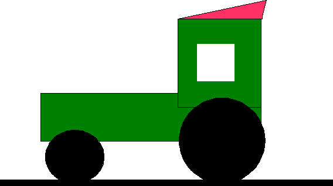
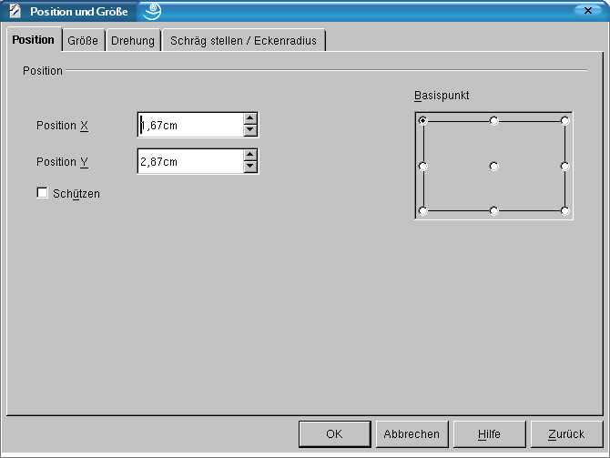
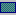
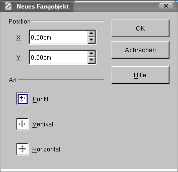

| [zurück] | [Hauptmenü] | [weiter] |
| [PDF] | ||
Erstellen einer einfachen Zeichnung

Abbildung
1: Ein kleines Beispiel, der Traktor
Im Folgenden soll zur Übung ein Traktor
gezeichnet werden.
Betätigen Sie in der Werkzeugleiste die Schaltfläche i„Ellipsen und Kreise“ iund wählen den gefüllten Kreis aus (für die Räder).
Ziehen Sie im Dokument (Mauszeiger = Fadenkreuz mit Kreis) den Kreis von oben nach unten auf. Halten Sie dabei die linke Maustaste gedrückt.
-

Abbildung 2: Der Dialog „Position und Größe“
Um den Basispunkt des Kreises zu lokalisieren, öffnen Sie nun mit einem Rechtsklick das Kontextmenü (bei markiertem Objekt) und Klicken auf Position und Größe. Suchen Sie in der Registerkarte „Position“ auf der rechten Seite den Punkt auf der Mitte der Unterseite, und lesen den Y-Wert dieses Punktes ab. So können Sie die Räder auf den selben Y-Wert einrichten.
Jetzt zeichnen Sie das große Rad, und setzten die Basis auf den oben ermittelten Y-Wert. (Menü Position und Größe Registerkarte „Position“, „Basispunkt“ Mitte wählen, Y-Wert markieren und oben ermittelten Wert eingeben.)
|
|
Sie können den Dialog „Position und Größe“ auch mit der Funktionstate <F4> öffnen. |
Wenn Sie nun die Rechtecke  (den Aufbau) zeichnen und die gewünschten Farben in der Objektleiste auswählen, bemerken Sie, dass sich die neueren Objekte immer vor die älteren stellen. Das können Sie ändern, indem Sie in der Werkzeugleiste auf die Schaltfläche Anordnung klicken. Das neue Objekt geht hinter das ältere. Dort sind auch noch die Funktionen ganz nach vorne, weiter nach vorne, ganz nach hinten, weiter nach hinten, vor bzw. hinter das Objekt und Objekte vertauschen.
Zeichnen Sie nun das Dach.
Zuerst sollten Sie einen Fangpunkt setzen, damit das Dach auch perfekt auf den Aufbau passt. Wählen Sie das Werkzeug „Auswahlpfeil“ und wählen Sie den Aufbau aus.
Holen Sie sich nach der oben beschriebenen Methode die X- und Y-Position der linken oberen Ecke (Position und Größe – Sie erinnern sich noch?).
Daraufhin deselektieren Sie alle Zeichenobjekte, indem Sie auf eine freie Stelle in der Zeichnung klicken.
-

Abbildung 3: Fangobjekt
Rufen Sie mit der rechten Maustaste das Kontextmenü auf und wählen Fangpunkt/-linie setzen ... auf. In dem erscheinenden Dialog (Abbildung 3) geben Sie die X- und Y-Werte ein, die Sie gerade ermittelt haben. Es erscheint dann auf der linken oberen Ecke des Aufbaus ein gestricheltes Kreuz.
Wenn der Fangpunkt gesetzt ist, wählen Sie das Werkzeug „gefülltes Polygon“ aus. Leider ist es zunächst versteckt. Klicken Sie auf das Werkzeug „Kurve“ und halten die Maustaste gedrückt. Ein kleines Menü mit verschiedenen Werkzeugen wird sich gleich öffnen, in dem Sie „gefülltes Polygon“
 auswählen können.
auswählen können.Anschließend können Sie das Dach zeichnen. An jeder Ecke des Objekts klicken Sie einmal, aber an der letzten Ecke müssen Sie doppelklicken.
|
|
Wenn man die <Umschalttaste> beim Zeichnen einer Linie gedrückt hält, wird Sie automatisch senkrecht bzw waagerecht gezeichnet. |
Jetzt zeichnen Sie noch eine Linie als Straße unter die Räder und ändern die Linienstärke über das Drehfeld „Linienbreite“ (in der Objektleiste) in 0,30 cm.
Zum Schluss markieren Sie mit <Strg>+<A> alles und rufen per Rechtsklick das Kontextmenü auf. Dort wählen Sie den Punkt „Gruppieren“. Damit bilden alle Objekte eine Gruppe, und der ganze Traktor kann mit Kopieren und Einfügen kopierten werden.